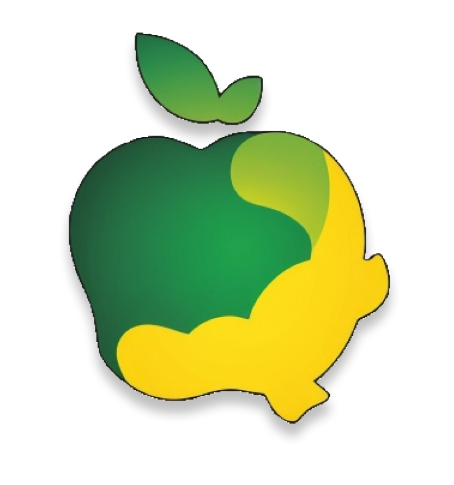

Sobre mim
Sou um desenvolvedor Full Stack com experiência na criação de aplicações web e APIs escaláveis. Possuo formação em Análise e Desenvolvimento de Sistemas pela FATEC e atuei em projetos freelance e suporte técnico, adquirindo habilidades em desenvolvimento de software e infraestrutura de TI. Minha experiência inclui a criação de interfaces responsivas com React e TypeScript, desenvolvimento de APIs em Node.js, modelagem de bancos de dados (MongoDB e PostgreSQL) e testes automatizados com Jest. Além disso, tenho conhecimento em metodologias ágeis (Scrum e Kanban) e controle de versão com Git e GitHub. Busco sempre aprimorar minhas habilidades e contribuir para soluções inovadoras e eficientes.
Projetos e habilidades
-
Bem vindo ao meu portfólio!
Ver projeto no Github -
A The Perry Devs desenvolveu uma plataforma online para facilitar a locação de bicicletas, atendendo ao desafio proposto pela empresa Gen App. O site permite que os usuários alugem bicicletas de forma prática e segura, além de oferecer a possibilidade de disponibilizar suas próprias bikes para aluguel, tudo com base na localização do usuário. A solução foi projetada para proporcionar uma experiência intuitiva e eficiente, conectando ciclistas e proprietários de bicicletas em um ambiente confiável.
Ver projeto no Github -

A The Perry Devs desenvolveu um site institucional para a FATEC, voltado ao treinamento e padronização da metodologia ágil e seus artefatos. A plataforma tem como objetivo capacitar os colaboradores, proporcionando um ambiente estruturado para o aprendizado e aplicação das práticas ágeis. Com isso, busca-se não apenas a uniformização na elaboração de projetos, mas também a disseminação da metodologia dentro da organização, garantindo maior eficiência e alinhamento nos processos.
Ver projeto no github -
A The Perry Devs desenvolveu uma plataforma para otimizar a administração dos projetos de mapeamento da empresa Visiona. Essa solução permite um gerenciamento mais eficiente das operações, centralizando informações e facilitando o acompanhamento do progresso dos projetos. Com uma interface intuitiva e funcionalidades voltadas para a organização e análise de dados, a plataforma visa melhorar a produtividade e a tomada de decisões dentro da empresa.
Ver projeto no Github -

A The Perry Dev desenvolveu um aplicativo para monitoramento nutricional e de atividades físicas, permitindo que os usuários registrem alimentos consumidos, acompanhem calorias ingeridas e gastas, monitorem exercícios físicos e acessem relatórios de progresso. Com uma interface intuitiva, o app proporciona uma experiência simples e eficiente para o controle da alimentação e do bem-estar.
Ver projeto no Github